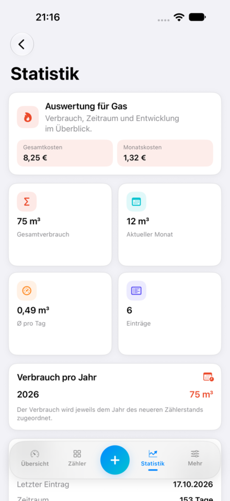

Support
Hilfe zu Zählerblick
Bei Fragen, Problemen oder Feedback zur App Zählerblick kannst du den Support per E-Mail kontaktieren.
Kontakt

Häufige Themen
- Zähler anlegen, bearbeiten oder löschen
- Zählerstände erfassen und korrigieren
- CSV-Export, Backup und PDF-Berichte
- Widget-Einrichtung
- Zählerblick Pro und Käufe wiederherstellen
- Kamera, OCR, Fotos und optionaler Standortnachweis
Pro-Kauf wiederherstellen
Öffne in der App den Bereich „Mehr“, wähle „Zählerblick Pro freischalten“ und tippe auf „Käufe wiederherstellen“.
Datenschutz
Zählerblick speichert deine Zählerdaten lokal auf deinem Gerät. Weitere Informationen findest du in der Datenschutzerklärung.